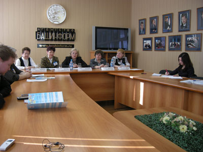

|
Пресс-конференция
Мы решили придать своему начинанию достойный резонанс и организовали пресс-конференцию в Рекламно-информационном агентстве «Башинформ». Как оказалось, фестиваль детской книги и чтения вызвал немалый интерес СМИ. На встречу с библиотекарями пришли журналисты из традиционных и электронных изданий, ведущих телекомпаний столицы, что нас очень порадовало. Пресс-конференция помогла детским библиотекарям достойно заявить о своем новом проекте.
Перед собравшимися работниками СМИ выступила директор ЦСДБ Альфия Юнусова с сообщением «Детские библиотеки Уфы в меняющемся мире». О своем детище - начинающемся фестивале детской книги и чтения с вдохновением и блеском рассказала Светлана Максимова. Заведующая методическим отделом Центральной детской библиотеки Татьяна Зюсько сообщила о наиболее крупных и интересных мероприятиях Недели детской книги и музыки, готовящихся к проведению в детских библиотеках ЦСДБ в рамках фестиваля. Вопросы детского чтения с позиций сегодняшнего дня осветила заведующая отделом координации и обслуживания населения ЦГДБ Ирина Мезенцева.
На пресс-конференции присутствовали наши друзья и партнеры. Председатель республиканского отделения Российского детского фонда Нина Федянина напомнила собравшимся о многолетнем добром сотрудничестве этой благотворительной организации с Центральной детской библиотекой. Высокую оценку важному для детей начинанию и доскональной подготовке библиотекарей ЦСДБ к фестивалю дала наша коллега, заместитель директора Национальной библиотеки имени А.-З. Валиди Галина Евдищенко. Выступила и представитель учебно-методического центра «Эдвис» Алентина Шуматбаева (эта фирма постоянно выступает спонсором наших праздничных программ).
 |
|
| Другие фото | |
{kind=link}
{kind=link}